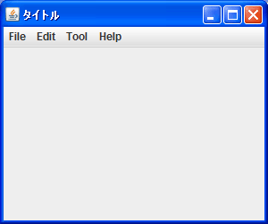
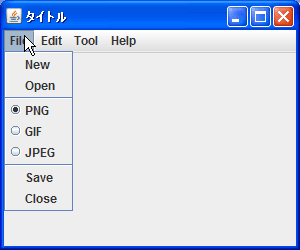

ラジオボタンå�‹ãƒ¡ãƒ‹ãƒ¥ãƒ¼ã‚¢ã‚¤ãƒ†ãƒ ã�®è¿½åŠ
メニューアイテム�一����ラジオボタン��メニューアイテム�使�方を確�������。ラジオボタン�メニューアイテムを作��る��JRadioButtonMenuItemクラスを使用���。JRadioButtonMenuItemクラス�次�よ��定義�れ����。
public class JCheckBoxMenuItem extends JMenuItem implements SwingConstants, Accessible
java.lang.Object
Ｌ java.awt.Component
Ｌ java.awt.Container
Ｌ javax.swing.JComponent
Ｌ javax.swing.AbstractButton
Ｌ javax.swing.JMenuItem
Ｌ javax.swing.JRadioButtonMenuItem
ラジオボタン��メニューアイテム�JMenuItemクラス�サブクラス�������。
JRadioButtonMenuItemクラスを利用�る��コンストラクタを使��JRadioButtonMenuItemクラス�オブジェクトを作����。��よ��コンストラクタ�用��れ��る�確������。
| コンストラクタ�概� |
|---|
| JRadioButtonMenuItem() テã‚ストã�Šã‚ˆã�³ã‚¢ã‚¤ã‚³ãƒ³ã‚’指定ã�—ã�ªã�„ã�§ JRadioButtonMenuItem を作æˆ�ã�—ã�¾ã�™ã€‚ |
| JRadioButtonMenuItem(Action a) 指定ã�•ã‚Œã�Ÿ Action ã�‹ã‚‰ãƒ—ãƒãƒ‘ティーをå�–å¾—ã�™ã‚‹ãƒ©ã‚¸ã‚ªãƒœã‚¿ãƒ³ãƒ¡ãƒ‹ãƒ¥ãƒ¼é …目を作æˆ�ã�—ã�¾ã�™ã€‚ |
| JRadioButtonMenuItem(Icon icon) イコンを指定�� JRadioButtonMenuItem を作����。 |
| JRadioButtonMenuItem(Icon icon, boolean selected) ãƒ©ã‚¸ã‚ªãƒœã‚¿ãƒ³ãƒ¡ãƒ‹ãƒ¥ãƒ¼é …ç›®ã‚’ã€�イメージã�Šã‚ˆã�³é�¸æŠ�状態を指定ã�—ã€�テã‚ストを指定ã�—ã�ªã�„ã�§ä½œæˆ�ã�—ã�¾ã�™ã€‚ |
| JRadioButtonMenuItem(String text) テã‚ストを指定ã�—ã�¦ JRadioButtonMenuItem を作æˆ�ã�—ã�¾ã�™ã€‚ |
| JRadioButtonMenuItem(String text, boolean selected) ãƒ©ã‚¸ã‚ªãƒœã‚¿ãƒ³ãƒ¡ãƒ‹ãƒ¥ãƒ¼é …ç›®ã‚’ã€�é�¸æŠ�状態ã�¨ãƒ†ã‚ストを指定ã�—ã�¦ä½œæˆ�ã�—ã�¾ã�™ã€‚ |
| JRadioButtonMenuItem(String text, Icon icon) ãƒ©ã‚¸ã‚ªãƒœã‚¿ãƒ³ãƒ¡ãƒ‹ãƒ¥ãƒ¼é …ç›®ã‚’ã€�Icon ã�¨ãƒ†ã‚ストを指定ã�—ã�¦ä½œæˆ�ã�—ã�¾ã�™ã€‚ |
| JRadioButtonMenuItem(String text, Icon icon, boolean selected) ãƒ©ã‚¸ã‚ªãƒœã‚¿ãƒ³ãƒ¡ãƒ‹ãƒ¥ãƒ¼é …ç›®ã‚’ã€�テã‚ストã€�イメージã€�ã�Šã‚ˆã�³é�¸æŠ�状態を指定ã�—ã�¦ä½œæˆ�ã�—ã�¾ã�™ã€‚ |
多��コンストラクタ�用��れ������基本的�考�方�JRadioButtonクラス�����。詳���「ラジオボタン�作�(JRadioButtonクラス)�を�照��下��。
����基本��る5番目�コンストラクタを確������。
JRadioButtonMenuItem public JRadioButtonMenuItem(String text)
テã‚ストを指定ã�—ã�¦ JRadioButtonMenuItem を作æˆ�ã�—ã�¾ã�™ã€‚ パラメータ: text - JRadioButtonMenuItem ã�®ãƒ†ã‚スト
引数ã�«ã�¯ãƒ©ã‚¸ã‚ªãƒœã‚¿ãƒ³å�‹ã�®ãƒ¡ãƒ‹ãƒ¥ãƒ¼ã‚¢ã‚¤ãƒ†ãƒ ã�«è¡¨ç¤ºã�•ã‚Œã‚‹æ–‡å—列をè¨å®šã�—ã�¾ã�™ã€‚
実際�使�方�次�よ���り��。
JMenu submenu = new JMenu("Encode");
JMenu menu = new JMenu("File");
JMenuItem menuitem1 = new JMenuItem("New");
JMenuItem menuitem2 = new JMenuItem("Open");
JRadioButtonMenuItem radiomenuitem1 = new JRadioButtonMenuItem("Auto Save");
JRadioButtonMenuItem radiomenuitem2 = new JRadioButtonMenuItem("Auto Check");
menu.add(menuitem1);
menu.add(menuitem2);
menu.add(radiomenuitem1);
menu.add(radiomenuitem2);
ラジオボタンå�‹ã�®ãƒ¡ãƒ‹ãƒ¥ãƒ¼ã‚¢ã‚¤ãƒ†ãƒ も通常ã�®ãƒ¡ãƒ‹ãƒ¥ãƒ¼ã‚¢ã‚¤ãƒ†ãƒ ã�¨å�Œã�˜ã‚ˆã�†ã�«ãƒ¡ãƒ‹ãƒ¥ãƒ¼ã�«è¿½åŠ ã�—ã�¦åˆ©ç”¨ã�—ã�¾ã�™ã€‚
ã�ªã�Šãƒ©ã‚¸ã‚ªãƒœã‚¿ãƒ³ã�®å ´å�ˆã�¨å�Œã�˜ã��ラジオボタンå�‹ãƒ¡ãƒ‹ãƒ¥ãƒ¼ã‚¢ã‚¤ãƒ†ãƒ ã‚‚ã€�ラジオボタンをグループã�«ã�¾ã�¨ã‚�ã€�複数ã�®ãƒ©ã‚¸ã‚ªãƒœã‚¿ãƒ³ã�®ä¸ã�‹ã‚‰ä¸€ã�¤ã� ã�‘ã�Œé�¸æŠ�状態ã�«ã�™ã‚‹ã‚ˆã�†ã�ªä½¿ã�„æ–¹ã�Œä¸€èˆ¬çš„ã�§ã�™ã€‚ラジオボタンå�‹ã�®ãƒ¡ãƒ‹ãƒ¥ãƒ¼ã‚¢ã‚¤ãƒ†ãƒ をグループã�«ã�¾ã�¨ã‚�ã‚‹å ´å�ˆã�¯æ¬¡ã�®ã‚ˆã�†ã�«è¨˜è¿°ã�—ã�¾ã�™ã€‚
JMenu submenu = new JMenu("Encode");
JMenu menu = new JMenu("File");
JMenuItem menuitem1 = new JMenuItem("New");
JMenuItem menuitem2 = new JMenuItem("Open");
JRadioButtonMenuItem radiomenuitem1 = new JRadioButtonMenuItem("PNG");
JRadioButtonMenuItem radiomenuitem2 = new JRadioButtonMenuItem("GIF");
ButtonGroup group = new ButtonGroup();
group.add(radiomenuitem1);
group.add(radiomenuitem2);
menu.add(menuitem1);
menu.add(menuitem2);
menu.add(radiomenuitem1);
menu.add(radiomenuitem2);
é�¸æŠ�/é��é�¸æŠ�ã�®è¨å®š
ラジオボタンå�‹ã�®ãƒ¡ãƒ‹ãƒ¥ãƒ¼ã‚¢ã‚¤ãƒ†ãƒ ã�¯ã€�é�¸æŠ�ã�¨é��é�¸æŠ�ã�®2ã�¤ã�®çŠ¶æ…‹ã‚’æŒ�ã�¡ã�¾ã�™ã€‚ユーザーã�Œãƒ¡ãƒ‹ãƒ¥ãƒ¼ã‚¢ã‚¤ãƒ†ãƒ 上ã�§ã‚¯ãƒªãƒƒã‚¯ã�™ã‚‹ã�“ã�¨ã�«ã‚ˆã‚Šé�¸æŠ�/é��é�¸æŠ�を切り替ã�ˆã‚‹ã�“ã�¨ã�Œã�§ã��ã�¾ã�™ã�Œã€�メソッドを使ã�£ã�¦ãƒ—ãƒã‚°ãƒ©ãƒ ã�‹ã‚‰çŠ¶æ…‹ã‚’è¨å®šã�™ã‚‹ã�“ã�¨ã�Œã�§ã��ã�¾ã�™ã€‚
è¨å®šã�™ã‚‹ã�«ã�¯JRadioButtonMenuItemクラスã�®è¦ªã‚¯ãƒ©ã‚¹ã�§ã�‚ã‚‹AbstractButtonクラスã�§ç”¨æ„�ã�•ã‚Œã�¦ã�„ã‚‹setSelectedメソッドを使ã�„ã�¾ã�™ã€‚
setSelected public void setSelected(boolean b)
ボタンã�®çŠ¶æ…‹ã‚’è¨å®šã�—ã�¾ã�™ã€‚ã�“ã�®ãƒ¡ã‚½ãƒƒãƒ‰ã�¯ actionEvent をトリガーã�—ã�ªã�„点ã�«æ³¨æ„�ã�—ã�¦ã��ã� ã�•ã�„。 プãƒã‚°ãƒ©ãƒ 上ã�§å‹•ä½œã‚’変更ã�™ã‚‹ã�«ã�¯ã€�doClick を呼ã�³å‡ºã�—ã�¾ã�™ã€‚ パラメータ: b - ボタンã�Œé�¸æŠ�ã�•ã‚Œã�¦ã�„ã‚‹å ´å�ˆã�¯ trueã€�ã��ã�†ã�§ã�ªã�„å ´å�ˆã�¯ false
引数�ラジオボタンを����状態��る�����状態��る�を表�boolean��値を指定���。trueを指定�れ���状態��りfalseを指定�れ�����状態��り��。
���在�状態を�得�る��JRadioButtonMenuItemクラス�親クラス��るAbstractButtonクラス�用��れ��るisSelectedメソッドを使���。
isSelected public boolean isSelected()
ボタンã�®çŠ¶æ…‹ã‚’è¿”ã�—ã�¾ã�™ã€‚トグルボタンã�Œé�¸æŠ�ã�•ã‚Œã�¦ã�„ã‚‹å ´å�ˆã�¯ trueã€�ã��ã�†ã�§ã�ªã�„å ´å�ˆã�¯ false ã‚’ è¿”ã�—ã�¾ã�™ã€‚ 戻り値: トグルボタンã�Œé�¸æŠ�ã�•ã‚Œã�¦ã�„ã‚‹å ´å�ˆã�¯ trueã€�ã��ã�†ã�§ã�ªã�„å ´å�ˆã�¯ false
メソッドを実行ã�™ã‚‹ã�¨ã€�ç�¾åœ¨é�¸æŠ�ã�•ã‚Œã�¦ã�„ã‚‹å ´å�ˆã�¯trueã€�é�¸æŠ�ã�•ã‚Œã�¦ã�„ã�ªã�„å ´å�ˆã�¯falseã‚’è¿”ã�—ã�¾ã�™ã€‚
実際�使�方�次�よ���り��。
JMenu submenu = new JMenu("Encode");
JMenu menu = new JMenu("File");
JMenuItem menuitem1 = new JMenuItem("New");
JMenuItem menuitem2 = new JMenuItem("Open");
JRadioButtonMenuItem radiomenuitem1 = new JRadioButtonMenuItem("PNG");
JRadioButtonMenuItem radiomenuitem2 = new JRadioButtonMenuItem("GIF");
ButtonGroup group = new ButtonGroup();
group.add(radiomenuitem1);
group.add(radiomenuitem2);
menu.add(menuitem1);
menu.add(menuitem2);
menu.add(radiomenuitem1);
menu.add(radiomenuitem2);
radiomenuitem1.setSelected(true);
サンプルプãƒã‚°ãƒ©ãƒ
��実際�試�����。
import javax.swing.JFrame;
import javax.swing.JPanel;
import javax.swing.JLabel;
import javax.swing.JMenuBar;
import javax.swing.JMenu;
import javax.swing.JMenuItem;
import javax.swing.JRadioButtonMenuItem;
import javax.swing.ButtonGroup;
import java.awt.Container;
import java.awt.BorderLayout;
class SSample21_1 extends JFrame{
JLabel label;
public static void main(String args[]){
SSample21_1 frame = new SSample21_1("タイトル");
frame.setVisible(true);
}
SSample21_1(String title){
setTitle(title);
setBounds(100, 100, 300, 250);
setDefaultCloseOperation(JFrame.EXIT_ON_CLOSE);
JMenuBar menubar = new JMenuBar();
JMenu menu1 = new JMenu("File");
JMenu menu2 = new JMenu("Edit");
JMenu menu3 = new JMenu("Tool");
JMenu menu4 = new JMenu("Help");
menubar.add(menu1);
menubar.add(menu2);
menubar.add(menu3);
menubar.add(menu4);
JMenuItem menuitem1_1 = new JMenuItem("New");
JMenuItem menuitem1_2 = new JMenuItem("Open");
JMenuItem menuitem1_3 = new JMenuItem("Save");
JMenuItem menuitem1_4 = new JMenuItem("Close");
JRadioButtonMenuItem radiomenuitem1 = new JRadioButtonMenuItem("PNG");
JRadioButtonMenuItem radiomenuitem2 = new JRadioButtonMenuItem("GIF");
JRadioButtonMenuItem radiomenuitem3 = new JRadioButtonMenuItem("JPEG");
radiomenuitem1.setSelected(true);
ButtonGroup group = new ButtonGroup();
group.add(radiomenuitem1);
group.add(radiomenuitem2);
group.add(radiomenuitem3);
menu1.add(menuitem1_1);
menu1.add(menuitem1_2);
menu1.addSeparator();
menu1.add(radiomenuitem1);
menu1.add(radiomenuitem2);
menu1.add(radiomenuitem3);
menu1.addSeparator();
menu1.add(menuitem1_3);
menu1.add(menuitem1_4);
setJMenuBar(menubar);
JPanel p = new JPanel();
label = new JLabel();
p.add(label);
Container contentPane = getContentPane();
contentPane.add(p, BorderLayout.CENTER);
}
}
��コンパイルを行��上�実行�����。

��「File�メニューをクリック��下��。

メニューã�®ä¸ã�«ãƒ©ã‚¸ã‚ªãƒœã‚¿ãƒ³å�‹ã�®ãƒ¡ãƒ‹ãƒ¥ãƒ¼ã‚¢ã‚¤ãƒ†ãƒ ã�Œè¡¨ç¤ºã�•ã‚Œã�¦ã�„ã�¾ã�™ã€‚今å›�ã�¯åˆ†ã�‹ã‚Šã‚„ã�™ã�„よã�†ã�«ãƒ©ã‚¸ã‚ªãƒœã‚¿ãƒ³å�‹ãƒ¡ãƒ‹ãƒ¥ãƒ¼ã‚¢ã‚¤ãƒ†ãƒ ã�®å‰�後ã�«ã‚»ãƒ‘レータを表示ã�—ã�¦ã�‚ã‚Šã�¾ã�™ã€‚
ラジオボタンå�‹ã�®ãƒ¡ãƒ‹ãƒ¥ãƒ¼ã‚¢ã‚¤ãƒ†ãƒ ã�¯é€šå¸¸ã�®ãƒ©ã‚¸ã‚ªãƒœã‚¿ãƒ³ã�¨å�Œã�˜ã‚ˆã�†ã�«ã‚¯ãƒªãƒƒã‚¯ã�™ã‚‹ã�“ã�¨ã�§é�¸æŠ�/é��é�¸æŠ�を切り替ã�ˆã‚‹ã�“ã�¨ã�Œã�§ã��ã�¾ã�™ã€‚グループã�«ã�¾ã�¨ã‚�ã�¦ã�„ã‚‹ã�Ÿã‚�ã€�複数ã�®ãƒ©ã‚¸ã‚ªãƒœã‚¿ãƒ³ã�®ä¸ã�®1ã�¤ã�—ã�‹é�¸æŠ�状態ã�«ã�§ã��ã�¾ã�›ã‚“。
( Written by Tatsuo Ikura )

著者 / TATSUO IKURA
åˆ�心者ï½�ä¸ç´šè€…ã�®æ–¹ã‚’対象ã�¨ã�—ã�Ÿãƒ—ãƒã‚°ãƒ©ãƒŸãƒ³ã‚°æ–¹æ³•ã‚„開発環境ã�®æ§‹ç¯‰ã�®è§£èª¬ã‚’è¡Œã�†ã‚µã‚¤ãƒˆã�®é�‹å–¶ã‚’è¡Œã�£ã�¦ã�„ã�¾ã�™ã€‚